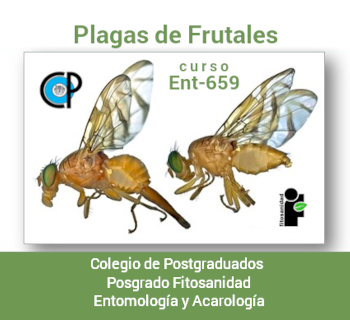

Profesor
Héctor González
Hernández
hgzzhdz@colpos.mx
Curso • Plagas de Frutales • ENT-659

• PRESENTACIONES •
Conceptos de manejo integrado de plagas
• LECTURAS MIP •
• Kogan, 1998. Integrated pest management: Historical Perspectives and Contemporary Developments.
• Altieri, 1999. AGROECOLOGIA. Bases científicas para una agricultura sustentable.
• Barrera et al., 2008. Manejo integrado de plagas.
• Barrera, 2019. Holistic Pest Management.
• Parsa et al., 2014. Obstacles to integrated pest management adoption in developing countries.
• Stern, 1973. ECONOMIC THRESHOLDS.
• Lewis et al., 1997. A total system approach to sustainable pest management.
Programa
PLAGAS DE FRUTALES
Primavera 2021
Horario
Lunes y miércoles
de 9:45 a 11:00